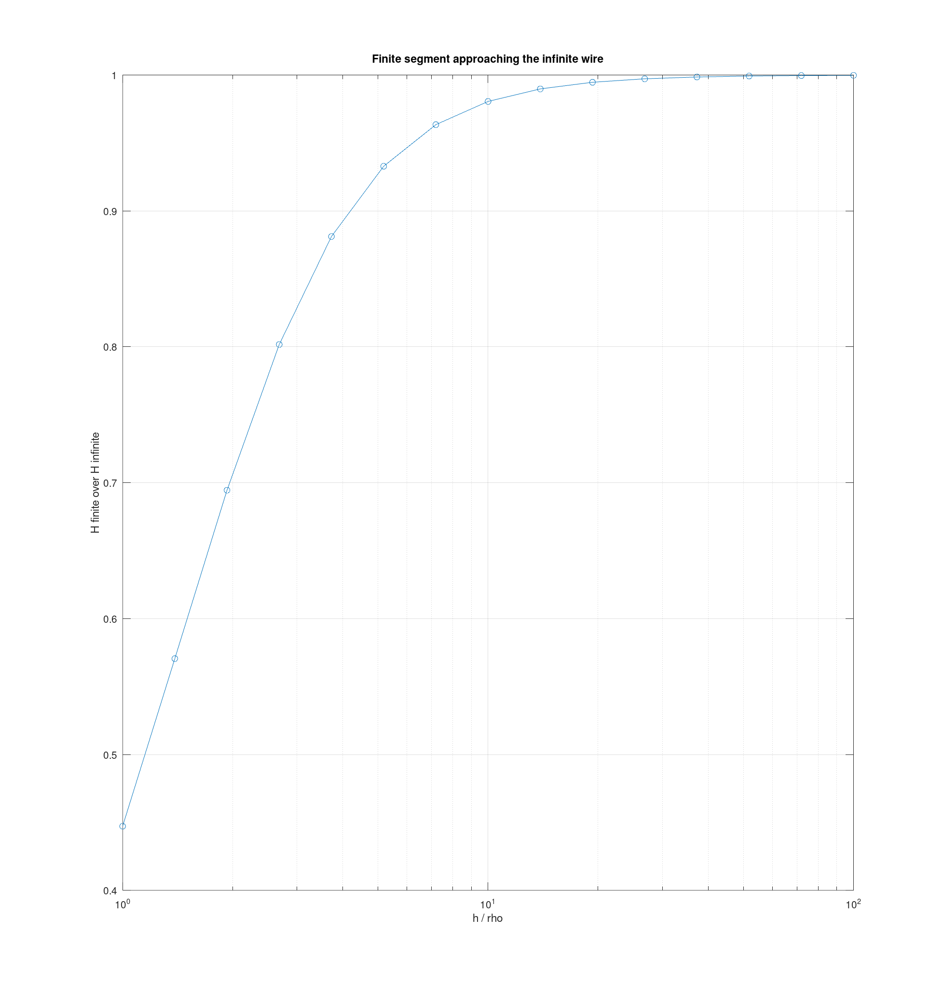
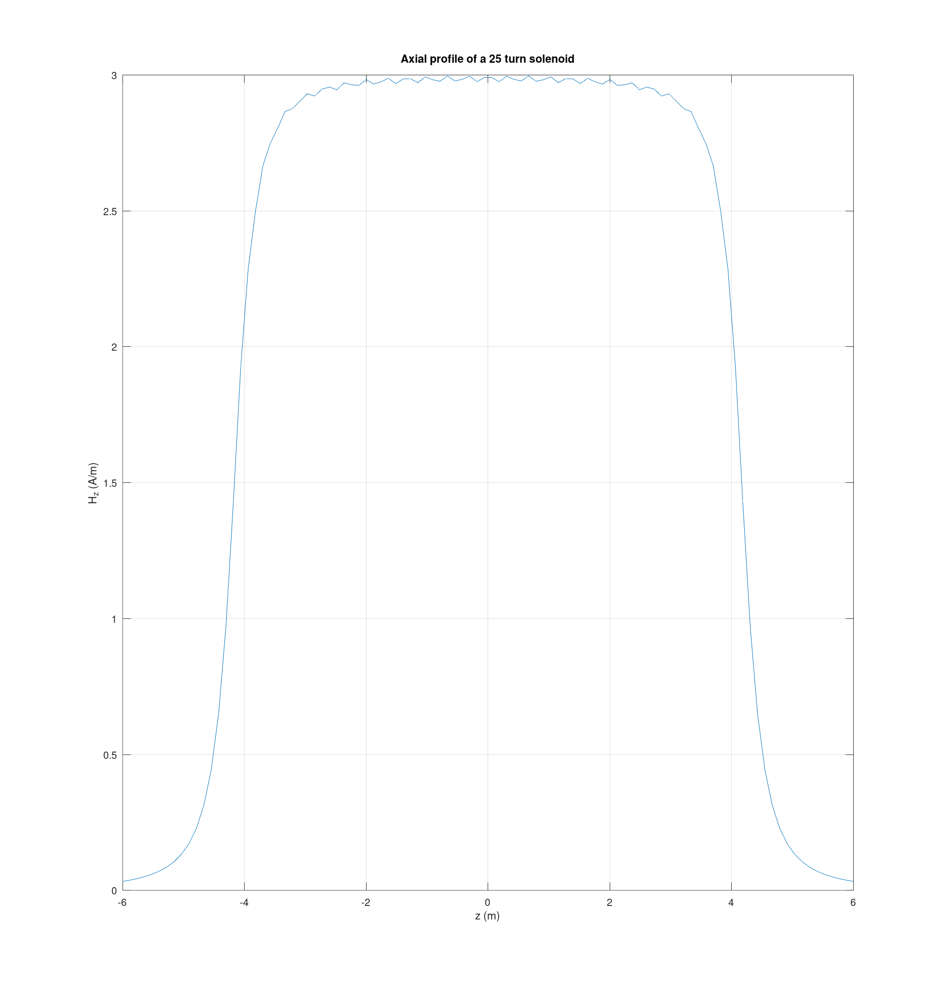
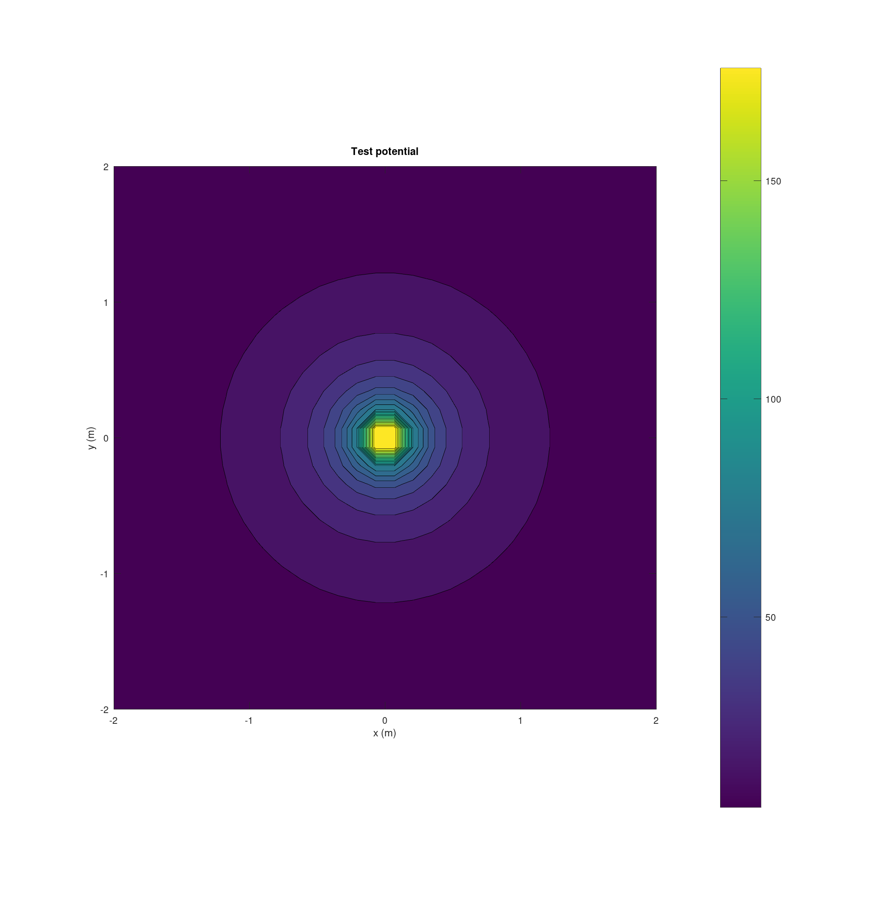
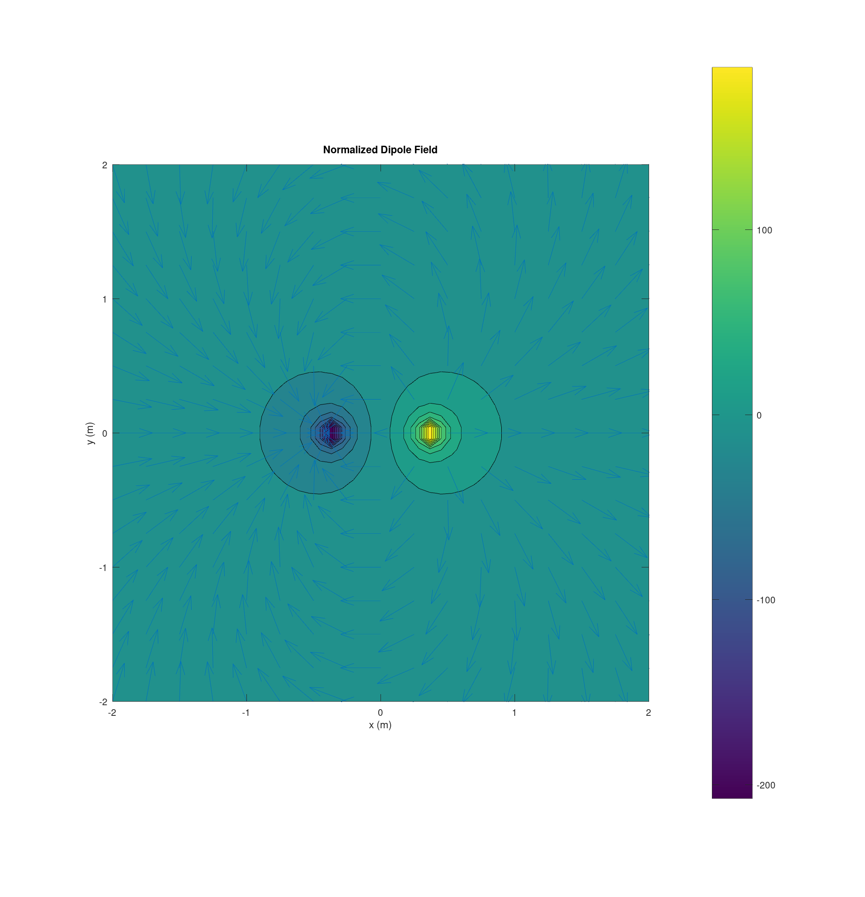

Team 03 — Carissa McWilliams, Amelia Harris, and Mitch Nazareth.
clear; close all;
em.field.H is the same loop as em.field.E with a different numerator.
minutes_for_H = 70; % The biggest challenge was taking the structure from em.field.E and % changing it to calculate the magnetic field using the Biot-Savart law. % I had to make sure the cross product was handled correctly and that % the current source elements and their tangent vectors were being used % properly. I also had to make sure the function worked with multiple % observation points and handled points where the field calculation % could become singular. Reusing the source and integration code from % the previous labs helped save a lot of time. I think this would have % gone faster if the current source structure and tangent vector % calculations had already been set up.
a = 1; I = 1; ring = @(t)[a*cos(t) a*sin(t) zeros(size(t))]; sr = em.src.lineCurrent(I, ring, [0 2*pi], 400); z = linspace(0, 2, 10)'; Hnum = em.field.H(sr, [zeros(10,2) z]); Href = I*a^2 ./ (2*(a^2 + z.^2).^1.5); disp(' z (m) relative error') disp([z abs(Hnum(:,3) - Href)./Href]) Hc = em.field.H(sr, [0 0 0]); fprintf('center H_z = %.6f I over 2a = %.6f\n', Hc(3), I/(2*a)); fprintf('transverse component at center = %.3e (consistent with zero)\n', hypot(Hc(1), Hc(2)));
z (m) relative error
0 0.0000
0.2222 0.0000
0.4444 0.0000
0.6667 0.0000
0.8889 0.0000
1.1111 0.0000
1.3333 0.0000
1.5556 0.0000
1.7778 0.0000
2.0000 0.0000
center H_z = 0.500000 I over 2a = 0.500000
transverse component at center = 0.000e+00 (consistent with zero)
The same study as the Lab 4 finite line, with the field engine swapped. The curve has the same shape, and the handout asks why.
rho = 1; hor = logspace(0, 2, 15)'; ratio = zeros(size(hor)); for k = 1:numel(hor) h = hor(k) * rho; seg = @(t)[zeros(size(t)) zeros(size(t)) t]; ss = em.src.lineCurrent(I, seg, [-h/2 h/2], 800); Hs = em.field.H(ss, [rho 0 0]); ratio(k) = abs(Hs(2)) / (I/(2*pi*rho)); end figure; semilogx(hor, ratio, 'o-'); grid on xlabel('h / rho'); ylabel('H finite over H infinite') title('Finite segment approaching the infinite wire') fprintf('ratio first exceeds 0.99 at h/rho about %.1f\n', hor(find(ratio > 0.99, 1)));
ratio first exceeds 0.99 at h/rho about 19.3

aS = 0.4; hS = 8; Nturns = 25; zk = linspace(-hS/2, hS/2, Nturns); srcs = cell(1, Nturns); for k = 1:Nturns zc = zk(k); srcs{k} = em.src.lineCurrent(I, @(t)[aS*cos(t) aS*sin(t) zc*ones(size(t))], [0 2*pi], 200); end sol = em.src.merge(srcs{:}); zax = linspace(-6, 6, 100)'; Hax = em.field.H(sol, [zeros(100,2) zax]); figure; plot(zax, Hax(:,3), '-'); grid on xlabel('z (m)'); ylabel('H_z (A/m)') title('Axial profile of a 25 turn solenoid') Hcen = em.field.H(sol, [0 0 0]); fprintf('center H_z = %.4f N I over h = %.4f ratio = %.4f\n', ... Hcen(3), Nturns*I/hS, Hcen(3)/(Nturns*I/hS)); fprintf('aspect ratio h/a = %.0f\n', hS/aS);
center H_z = 2.9978 N I over h = 3.1250 ratio = 0.9593 aspect ratio h/a = 20

sneg = em.src.lineCurrent(-I, ring, [0 2*pi], 400); fprintf('max |H(-I) + H(I)| = %.3e (reversal)\n', ... max(em.vec.mag(em.field.H(sneg, [0.3 0.2 0.5]) + em.field.H(sr, [0.3 0.2 0.5])))); s2I = em.src.lineCurrent(2*I, ring, [0 2*pi], 400); fprintf('max |H(2I) - 2H(I)| = %.3e (linearity)\n', ... max(em.vec.mag(em.field.H(s2I, [0.3 0.2 0.5]) - 2*em.field.H(sr, [0.3 0.2 0.5])))); sm = em.src.merge(sr, s2I); fprintf('merged current source element count = %d (sum of parts = %d)\n', ... size(sm.pos,1), size(sr.pos,1) + size(s2I.pos,1)); try em.src.merge(sr, em.src.pointCharge(1e-9, [0 0 0])); disp('ERROR, this line must not be reached') catch err fprintf('merging current with charge correctly threw. %s\n', err.message); end
max |H(-I) + H(I)| = 0.000e+00 (reversal) max |H(2I) - 2H(I)| = 0.000e+00 (linearity) merged current source element count = 800 (sum of parts = 800) merging current with charge correctly threw. Cannot merge a current source with a charge source.
pts = randn(5000,3) + 5;
tic; em.field.H(sr, pts); t = toc;
fprintf('em.field.H on 5000 points took %.3f s (requirement, under 2 s)\n', t);
em.field.H on 5000 points took 0.434 s (requirement, under 2 s)
Lab 3 made this lab easier because the field engine was already set up to calculate fields at multiple observation points. Lab 4 also helped since I could reuse the source structures and numerical integration methods instead of starting over. Most of the work for em.field.H was changing the calculation to use the Biot-Savart law rather than having to build a completely new field engine. Going forward, I would try to design interfaces so they can be reused for different types of sources and field calculations. This would make adding new features easier and avoid having to rewrite code that already works.
None.
runTests
EECE 306 toolbox test suite
--------------------------------------------------------------
11.3.0
eps0 = 8.8541878128e-12 F/m
mu0 = 1.2566370614e-06 H/m
c0 = 2.9979245808e+08 m/s
eta0 = 376.730314 ohm
Derived constant checks passed.
mag([3 4 0]) = 5 (expect 5 exactly)
unit([3 4 0]) =
0.6000 0.8000 0
unit([0 0 0]) (expect all NaN) =
NaN NaN NaN
angle perpendicular = 1.5707963267949 (expect pi/2)
angle antiparallel = 3.14159265358979, real = 1 (expect pi, 1)
fromTo([1 1 1],[2 3 4]) =
1 2 3
mag input 100x3 output [100 1]
unit input 100x3 output [100 3]
angle input 100x3 output [100 1]
fromTo input 100x3 output [100 3]
PASS test_lab01 0.01 s
spherical roundtrip max error = 5.947e-15
cylindrical roundtrip max error = 2.047e-15
c2sph([0 0 1]) =
1 0 0
c2sph([0 0 -1]) =
1.0000 3.1416 0
phi in the four quadrants = 0.7854 2.3562 3.9270 5.4978 rad
all inside [0, 2*pi) = 1
vector roundtrip (spherical pair) max error = 8.882e-16
magnitude change under conversion max = 8.882e-16
vector roundtrip (cylindrical pair) max error = 6.280e-16
at (0, 5, 0), (Ar, Atheta, Aphi) =
3.0000e+00 1.8370e-16 -2.0000e+00
at (4, 0, 0), (Ar, Atheta, Aphi) =
2.0000e+00 1.2246e-16 3.0000e+00
PASS test_lab02 0.02 s
r (m) relative error
1.0000 0
2.0000 0
3.0000 0
4.0000 0
5.0000 0
6.0000 0
7.0000 0
8.0000 0
9.0000 0.0000
10.0000 0
max |Ex| on bisector = 0.000e+00 V/m
max |E| on the same plane = 6.298e+02 V/m
|E(r)| / |E(2r)| = 8.0003 (expect near 8 for a dipole)
em.field.E on 5000 points took 0.001 s (requirement, under 2 s)
PASS test_lab03 0.33 s
test_lab04 checks complete
PASS test_lab04 0.40 s
div D = 1.003980e-06, rho_v = 1.000000e-06
test_lab05 checks complete
PASS test_lab05 0.46 s
warning: The represented source extent is at least 50 times the median nearest-element distance for these observation points. Check finite extent; V = 0 at infinity is not valid for an ideal unbounded source.
warning: called from
V at line 51 column 9
test_lab06 at line 232 column 1
run at line 78 column 7
runTests at line 73 column 9
publish>eval_code_helper at line 1081 column 3
publish>eval_code at line 997 column 11
publish at line 402 column 5
warning: The represented source extent is at least 50 times the median nearest-element distance for these observation points. Check finite extent; V = 0 at infinity is not valid for an ideal unbounded source.
warning: called from
V at line 51 column 9
test_lab06 at line 235 column 1
run at line 78 column 7
runTests at line 73 column 9
publish>eval_code_helper at line 1081 column 3
publish>eval_code at line 997 column 11
publish at line 402 column 5
test_lab06 checks complete
PASS test_lab06 1.39 s
Lab 7 MMS error 8.224e-05; observed order 2.055; Gauss-law relative error 0.000
test_lab07 checks complete
PASS test_lab07 81.18 s
Lab 8 parallel-plate rel err 1.82e-16; two-layer harmonic order unresolved (aligned 1-D case); arithmetic order 0.983; coax rel err 0.0149
test_lab08 checks complete
PASS test_lab08 5.04 s
Lab 9 loop center Hz 2.875 A/m; wire ratio 0.99228 at h/rho=8.0; solenoid ratio 0.99123 at h/a=15.0; 5000-point H 0.038 s
test_lab09 checks complete
PASS test_lab09 0.20 s
--------------------------------------------------------------
9 passed, 0 failed, 9 total
All tests passing.

